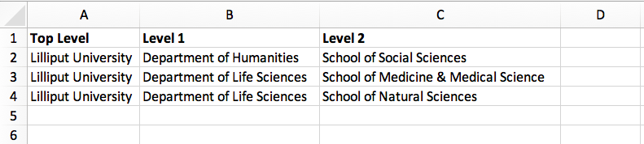
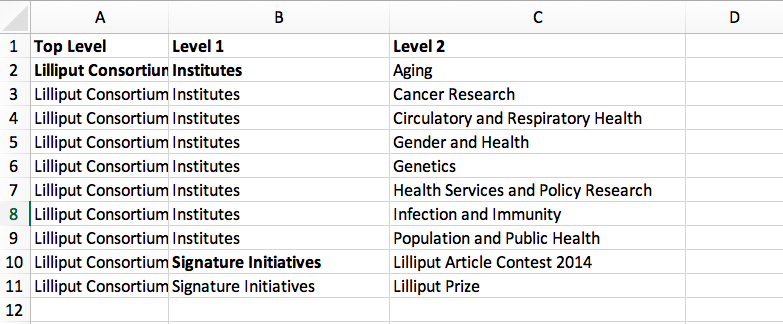
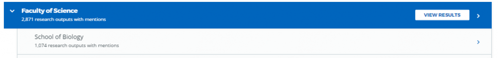

Overview
Altmetric collects attention data for outputs that have been mentioned online across a range of sources. As items in the Altmetric database are not organized by institution, we can integrate with third party systems or allow for a manual CSV upload in order to set up your institutional version of Explorer for Institutions, with outputs produced by your own authors and departments.
We will then populate Explorer for Institutions by linking your set of publications, authors and departments with the scholarly publications already tracked in the Altmetric database. This enables you to browse the altmetrics of your institutional outputs by your institutional authors and departments.
Connecting to your Research Information Management System
Implementation involves granting API access to Altmetric, so that Explorer for Institutions can be automatically populated with the relevant publication, author and departmental data.
Symplectic Elements
If your institution uses Symplectic Elements, Altmetric is able to easily provide a seamless link between Elements and Explorer for Institutions. Currently, Altmetric can connect to Symplectic Elements v5.5, or above.
Instructions are detailed below on establishing the connection between Explorer for Institutions and your instance of Symplectic Elements.
Administrator instructions for Elements
Please follow the instructions below to set up your Elements API for Altmetric.
Open a port
You’ll first need to open a port in your firewall to allow access to your Elements API, to do this you’ll need to find an available port.
To see the ports currently in use run this from a command line:
netstat -an | find /i "listening"
Assign an SSL certificate
Next you’ll need to take the thumbprint and assign a valid SSL certificate to your chosen port. Replace the <port number> and <thumbprint> before running this from a command line:
netsh http add sslcert ipport=0.0.0.0:<port number> certhash=<thumbprint> appid={00112233-4455-6677-8899-AABBCCDDEEFF}
Run this to see if your port is now listed:
netsh http show sslcert
Important
Whilst Altmetric does not require Elements to be accessed over SSL it’s highly recommended that it is. Using SSL is a good way to ensure your data is sent securely to our servers, without SSL we will pull your data across the network in plain text. Note that even without SSL, no sensitive employee information is ever sent to Altmetric.
Add API endpoint
Next you’ll need to add an API endpoint. System administrators can configure the Elements API in the Manage API area under System Admin.
Add a new API endpoint on the API Endpoints page with the following details:
Compatibility: Standard 4.9
Scheme: HTTPS (Secure)
Port: as set up above
Path: for example:
elements-api-altmetric
This will create an endpoint with address like: https://<host>:<port number>/elements-api-altmetric.
Ensure that it is enabled and then update the page.
Add Altmetric as external system with allowed access
Add Altmetric’s required IP ranges on the API Configuration page:
Live: 164.132.63.174
Staging: 51.254.16.223
Hint
Adding both IP ranges to your Elements production instance allows us to test your import via our staging (development) server and then launch on our live server.
Add an API Account for Altmetric
Set up login credentials for Altmetric. Add a new API account for Altmetric to be able to connect to the API endpoint using credentials:
Username : altmetric
Password : [set to a secure password]
Account rights : none
Make sure you set the password to something secure.
Restart API under Scheduled Jobs .
Send Altmetric your API details and credentials
Once you have enabled access to your Symplectic Elements API endpoint (and provided access for both live and staging servers), please securely send the following to your Engagement Manager:
The API endpoint you set up
The login credentials
You will hear back from your Engagement Manager about whether or not the connection with your Symplectic Elements API endpoint, was successful. Once the connection has been confirmed to be successful, we will schedule your implementation in order to begin pulling in your publications data from Symplectic Elements.
Object privacy settings for Elements
In version 6.2, Symplectic introduced a more extensive privacy framework that allowed objects/items to be set as private , internal or public. The integration we have with Elements can be configured to apply these same familiar privacy concepts to your Explorer for Institutions giving you full control of how your data is shared with us.
You can read more about object privacy for Element 6.2 and above here.
Synchronizing objects based on their privacy level is available at the following restrictive levels:
Public - We will only import public user profiles, research outputs and relationships
Public and Internal - We will only import public and internal user profiles, research outputs and relationships
Objects and relationships that are set as Private won’t ever appear in the Explorer.
Your Engagement Manager will discuss these configuration options with during onboarding. If you’re an existing Altmetric customer and would like to customize your existing configuration settings please contact support@altmetric.com.
Important
Changes to your Explorer for Institutions configuration will trigger a reset and full import of your Elements data. Depending on the size of your institution it may take several days to complete.
Warning
If you’re using a version of Elements prior to 6.2 all objects except private relationships will be imported. For information on data privacy in Elements prior to v6.2 please see:
User status and user profile type settings
As well as being able to choose what object privacy levels are synchronized with their Explorer for Institutions instance, customers have additional options to filter users depending on their status and user profile type.
Importing users based on status
Symplectic Elements includes an option to set user profiles as Current (i.e. currently affiliated with the organization; this status can include both academic and non-academic users).
Explorer for Institutions can be configured to either:
Import All users
Only import Current users
Importing users based on profile type
Symplectic Elements includes an option to assign specific types to user profiles, depending on their role in the institution.
The available profile types are:
Academic : Excludes all users with non-academic profiles (e.g. admin staff). When a user is marked as Academic, Elements is set to automatically retrieve their publication data from external sources
Student : Excludes Academic users and any other non-academic profiles (e.g. admin staff)
In some instances, users may be assigned to both these types, or to neither (e.g. admin staff).
Importing users based on their profile type can be configured to:
Import All users
Only import users that are set as Academic or Student
Import Academic users only
Important
User status, profile type and privacy level settings work in combination. For example:
If Current users and Academic users are both selected, only those users that are both current and academic will be imported (as opposed to importing all current users, and in addition all academic users separately)
If Current users, Academic users and the Public privacy setting are all selected, only those users that are both current and academic, and marked as Public, will be imported
Changes to your Explorer for Institutions configuration will trigger a reset and full import of your Elements data. Depending on the size of your institution it may take several days to complete.
Your Engagement Manager will discuss these configuration options with during onboarding. If you’re an existing Altmetric customer and would like to customize your existing configuration settings please contact support@altmetric.com.
Email notifications
We provide all our Elements customers with the option to receive an email notification (sent to one or more email addresses) on the completion of an import. If you’d like to be informed once an import has completed please provide your Engagement Manager with the email addresses and we’ll make the necessary configuration changes.
Pure
Altmetric can integrate with Pure in order to set up your institutional edition of Explorer for Institutions, allowing you to view your institution’s publication outputs, authors, and departments within the Explorer. We populate the Explorer for Institutions by linking your set of publications, authors and departments with the scholarly publications already tracked in the Altmetric database.
Please follow the instructions below to set up your Pure API for Altmetric.
Administrator instructions for Pure
Allow access through your firewall
If you have a firewall, ensure you have opened a port that would allow our IP addresses to access as detailed below.
Live: 164.132.63.174
Staging: 51.254.16.223
Hint
Adding both IP ranges to your Pure production instance allows us to test your import via our staging (development) server and then launch on our live server.
Create an API key and allow access to required endpoints
/research-outputs- we harvest identifiers associated with your publications from this endpoint, as well as publication-authors and publication-departments associations for each publication/persons- we harvest author names and author-departments associations from this endpoint/organisational-units- we harvest department names and parent departments from this endpoint so we can use it to build your departmental hierarchy/changes- this endpoint alerts us to any creation, update and deletion changes to publications, and update and deletion changes to authors.
Note
If preferred, you can also set up login credentials for Altmetric. Just provide these credentials to your Engagement Manager in a secure way at the same time as the endpoint and API key.
Provide Altmetric with access to your Pure API endpoint
Once you have enabled access to your API endpoint please securely provide the following information to your Engagement Manager:
Your Pure API endpoint, e.g., in a format like: https://pure.university.ac.uk/ws/rest/
An API key with access to all four above-named endpoints
Login credentials for Altmetric, if required
That’s it! You will hear back from your Engagement Manager about whether or not the connection with your Pure API endpoint was successful.
Send your publications data via CSV spreadsheet
You can populate Explorer for Institutions via a CSV spreadsheet detailing your author, publications and group/department data. Altmetric require two CSV files to populate your instance:
A Publications file listing your author names, publication identifiers (e.g. DOIs, PMIDs, etc.) and group/department affiliation for each item
An Organizational hierarchy file detailing your groups structure to populate the Departments tab in the Explorer. We create this structure to help you browse sets of publications in groups that make sense for your organization. This might be your university hierarchy or groupings such as open access status; funding award; grant ID; therapeutic area; animal type; health conditions; subjects, etc. The key thing is your groups are relevant to how you would like to report on Altmetric data.
Preparing your publications file
At minimum, we will need a file with three columns, containing the information shown below. Here’s an example of the minimum required data in a CSV:
Author |
Department |
DOI |
|---|---|---|
Carberry, Josiah |
School of Pottery |
10.1234/psycer123 |
Each row of this file should always correspond to:
Author names (with more than one author name separated by semicolon)
Department/groups associated with each publication (with more than one department/group separated by semicolon)
Publication identifiers
We use this data to populate publications, authors and department/groups in Explorer for Institutions. Here is a larger sample data set, with multiple IDs per item:
Author |
Department |
DOI |
PMID |
arXiv |
|---|---|---|---|---|
Carberry, Josiah |
School of Pottery |
10.1234/psycer123 |
||
Carberry, Josiah |
Department of Biological Sciences |
10.1234/psycer123 |
||
Carberry, Josiah |
Department of Biological Sciences |
10.1234/humkh456 |
65436 |
|
Carberry, Josiah |
Department of Biological Sciences |
10.1234/biolog789 |
4567 |
|
Brush, Painter |
Department of Applied Economics |
10.1234/painter444 |
12345 |
|
Brush, Painter |
Department of Applied Economics |
10.1234/psycer123 |
23467 |
1000.1 |
Science, Simon |
Department of Theatre and TV Studies |
10.6574/tv984213 |
||
Smith, John |
Department of Environmental Sciences |
10.1234/biolo123 |
||
Thomas, Eve; Jones, Peter; Willis, Sarah |
Lilliput Urban Cities Research Centre |
10.9874/hou345 |
The author and departmental affiliation(s) should correspond with an individual output. On a single row representing a single research output, you can list multiple authors separated by semicolon in “Lastname, Firstname” format (as seen in the bottom row above).
Please list each type of identifier in its own column, and don’t mix and match the DOIs and PMIDs (or other types of identifiers) within a single column. You should include both types of identifier whenever possible.
The department information should match the group names in your hierarchy CSV and not include duplicates.
A list of supported identifiers can be found in the Supported identifiers section.
Providing group information in your publications file for organizations without a traditional hierarchy structure
You can add multiple sections in your hierarchy if you would like to browse by different categories, e.g. Geography and Therapeutic Area.
Here is a publications file example for organizations with multiple group types:
Author |
DOI |
PMID |
Geography |
Therapeutic Area |
|---|---|---|---|---|
Carberry, Josiah |
10.1234/psycer123 |
65436 |
United States |
Hematology |
Carberry, Josiah |
10.1234/psycer123 |
4567 |
United States |
Hematology |
Brush, Painter |
10.1234/painter444 |
12345 |
United States |
Multiple Sclerosis |
Brush, Painter |
10.1234/psycer123 |
23467 |
United States |
Multiple Sclerosis |
Science, Simon |
10.6574/tv984213 |
United States |
Multiple Sclerosis |
|
Smith, John |
10.1234/biolo123 |
United States |
Multiple Sclerosis |
In the above example, you can see the file includes multiple identifiers for some items and each output appears in multiple groups. E.g., the first output (DOI: 10.1234/humkh456), also has a PMID of 65436 and is associated with two groups in the departmental hierarchy: United States and Hematology.
This output will therefore be discoverable via both identifiers and via the Geography > United States / Therapeutic Area > Hematology group .
Multiple departmental affiliations for a publication
If a single publication belongs to multiple departments, please list the departmental affiliations in the same cell and separate the names using semi-colons.
Example using semi-colons to separate departments:
Author |
Department |
DOI |
PMID |
|---|---|---|---|
Carberry, Josiah |
School of Pottery; School of Painting |
10.1234/psycer123 |
23467 |
Science, Simon |
School of Biology; School of Neuroscience; School of Biochemistry |
10.1234/biolo123 |
Organizational hierarchy: building your departments/groups structure
In order to browse your data by department or group, you will need to provide the structure of your departments/groups in a separate spreadsheet. Each level in the hierarchy should be listed in a separate column. This creates a section in the Explorer Departments view. A Level 1 group will be a new section, with its Level 2 groups associated as children. Column A should always contain the name of your organization - a Top Level department which won’t appear in the Explorer. See below for examples in Explorer for Institutions and as CSV spreadsheets. Please note: the department names must match the group names in your publications spreadsheet and not include duplicates.
University/research institution hierarchy example Here’s an example of a university departmental hierarchy in Explorer for Institutions:
Here’s how this hierarchy is structured in the CSV spreadsheet:
Funder hierarchy example Here’s an example of a funder departmental hierarchy in Explorer for Institutions:
Here’s how this hierarchy is structured in the CSV spreadsheet (with parent departments bolded for emphasis):
Pharmaceutical hierarchy example Here’s an example of a pharmaceutical departmental hierarchy in Explorer for Institutions:
Here’s how this hierarchy is structured in the CSV spreadsheet:

Supported identifiers
Explorer for Institutions supports the following unique identifiers via CSV import:
DOI
PubMed ID
NCT ID
RePeC ID
arXiv ID
ADS Bibcode
Handle
URN
ISBN
URI (custom service for supported domains only)
For each identifier type you want to use, please ensure that each of those types is listed in its own column.
Final steps
As soon as your data file is complete send it to your Engagement Manager. Check you have included the following:
Publications CSV file
Groups CSV file
Please use the instructions above to prepare your data and let us know if you have any questions. We will be happy to check this data for you and let you know if there are any issues, before walking you through how to upload the CSVs to your instance.
Keeping your data up-to-date via spreadsheet
Using the CSV uploader tool, one or more administrators at your organization can maintain the data integration by uploading new CSVs each time you wish to add, remove, or alter publications or departments. During the implementation process, we will establish who at your organization will be designated as an administrator; they will have access to the CSV tool and the administrator’s panel. Training will be provided for any individuals who are designated administrators.
Documentation about the CSV tool can be found in the Support Portal here.
Harvesting from your repository OAI-PMH feed
If your institution uses an institutional repository with an OAI-PMH feed, e.g. EPrints, DSpace or bepress, Altmetric can populate your instance of Explorer for Institutions using your repository data. This enables us to import your institutional authors, groups and organizational hierarchy from your institutional repository to Explorer for Institutions, and update your data automatically.
If you have a non-traditional structure to your institutional hierarchy please read this additional information.
Preparing your repository for an EFI integration
A number of metadata fields should be exposed via your OAI-PMH feed in order for Altmetric to collect all the relevant data from your repository and populate EFI. Instructions are detailed below.
Provide your OAI-PMH endpoint
Firstly, we need the base URL for your repository OAI-PMH endpoint, e.g.: http://eprints.lse.ac.uk/cgi/oai2 Altmetric will import your data via this endpoint.
Publications and identifiers
Next, Altmetric will import publications from your OAI-PMH feed, usually via a URL like this: http://eprints.lse.ac.uk/cgi/oai2?verb=ListRecords&metadataPrefix=oai_dc Altmetric collects identifiers from the OAI record for each item. Only records that have a supported identifier will be imported so ensure that all of your records have unique persistent identifiers (e.g. DOI, Handle, ISBN), and those identifier fields are available via the OAI-PMH feed.
Warning
We’re only able to import items with persistent identifiers.
Hierarchy
Altmetric recreates your organizational hierarchy from your institutional repository in order to populate the Departments tab in Explorer for Institutions. Groups should be available in the OAI-PMH feed, as detailed in the ListSets example below: http://eprints.lse.ac.uk/cgi/oai2?verb=ListSets.
The sets created should replicate your browse by Division/Group/Faculty view in the front end of your repository.
DiVA Portal
If you are a DiVA Portal customer and are using our OAI-PMH integration with the swepub_mods metadata prefix we’re able to offer you a number of ways to customize how departments are displayed within your Explorer for Institutions.
Translations/renaming - It might be that you want to translate your department names from Swedish to English or simplify certain department names so that they’re more easily identifiable for users.
Map papers to other departments - It might be that your repository hierarchy is out of date or your institution has gone through a number of changes over the years and departments have merged or you want to simplify reporting.
If either of these requirements are something that you’re interested in you can read more about translating/renaming departments here and re-mapping papers here.
We are also able to filter out specific record types based on their setSpec, for example as part of the synchronization process we’re able to exclude all records that have the name studentThesis.
Haplo
If you use Haplo for your repository then our integration will be configured to use the oai_datacite metadata prefix. This will enable us to specifically import authors that are affiliated with your institution.
DSpace
If you use DSpace for your repository then you will need to ensure that the api/hierarchy endpoint is enabled as we build your hierarchical structure using this data and not from ListSets .
If you are unable to enable this endpoint we are able to offer a departmentless integration as an alternative.
Esploro
Esploro requires that a setSpec is always provided when harvesting records from your repository. This means that in order to sync over your research outputs and to replicate your departmental structure within your Explorer for Institutions you will need to create publishing profiles for each department. If you are unable to to do this then we are able to offer a departmentless integration as an alternative.
Note
If you require a departmentless instance then because of the selective harvesting requirement - a single publishing profile would still be required.
The Esploro repository also exposes a number of other profiles via ListSets, for example BrowZine and Unpaywall . To exclude these from appearing within your Explorer for Institutions you would be required to prefix the setName of all publishing profiles you do want to see with Department = as in the example below.
To have a department for the Faculty of Science for which there is a dependent department School of Biology - you will need a publishing profile for each which would result in the following ListSet records.
Because of the filtering applied using Department = the BrowZine wouldn’t be synch’d.
<ListSets>
<set>
<setSpec>Faculty of Science</setSpec>
<setName>Department = Faculty of Science</setName>
</set>
<set>
<setSpec>Faculty of Science:School of Biology</setSpec>
<setName>Department = School of Biology</setName>
</set>
<set>
<setSpec>BrowZine</setSpec>
<setName>BrowZine</setName>
</set>
</ListSets>
This would result in the following structure within the Explorer.
Next steps
Please ensure you have completed steps the above. When all changes are in place and the new fields are accessible via your institutional repository OAI-PMH feed, Altmetric are able to begin your Explorer for Institutions implementation. During the implementation, we’ll initially run a full import of your repository data and set up weekly automatic updates to import new/modified items.
Frequently asked questions
What happens after my data are imported into Explorer for Institutions?
After Altmetric connects with your system for the first time, an initial mass import of all your authors, publications, departments, etc. will be carried out. The authors, departments, and organizational hierarchy information will be used to populate the Authors and Departments tabs that can be found in My institution.
Using the publications data you have supplied, Altmetric will retrieve any attention data it has stored in association with these particular publications. Thus, attention data for all scholarly articles in your institution will be automatically supplied once the connection is made. There is no further work required from you once you have provided Altmetric with access.